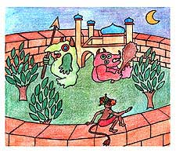
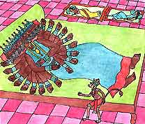

<html>
<!-- Mirrored from www.damodara.de/espaniol/html/jiva_tattva/Hanuman/Hanuman_08.htm by HTTrack Website Copier/3.x [XR&CO'2013], Sun, 23 Feb 2014 09:46:10 GMT -->
<head>
<title>El demonio Ravana Roncando con sus 10 cabezas</title>
<meta http-equiv="Content-Type" content="text/html; charset=iso-8859-1">
</head>

<body bgcolor="#FFFFFF" text="#000000">
<table width="45%" border="0" cellspacing="15" cellpadding="0" align="center" bordercolor="#FFFFFF" bgcolor="#FFFFFF" height="1170">
  <tr> 
    <td width="419" height="344" valign="top"> 
      <blockquote>
        <div align="center"> 
          <p align="center"><font face="Comic Sans MS"><o:p></o:p>Cuando Hanuman 
            lleg&oacute; a Lanka vio a muchos demonios resguardando el palacio 
            caminando por todas partes. Algunos eran gordos, otros delgados, algunos 
            eran color rojo betarraga, otros amarillo banana, y otros eran verde 
            pepino, todos eran feos y repugnantes y gru&ntilde;&iacute;an mientras 
            caminaban.</font></p>
          <p><font face="Comic Sans MS" size="3">&iexcl;Oh no! -pens&oacute; Hanuman- 
            mientras los observaba sentado en una de las murallas del gran palacio.</font></p>
          <p><font face="Comic Sans MS" size="3">Hanuman a&uacute;n estaba muy 
            peque&ntilde;o, entonces aprovechando de la oscuridad de la noche, 
            se las ingeni&oacute; para deslizarse entre los guardias, sin ser 
            visto. Cuando estuvo dentro de la blanca ciudad de m&aacute;rmol, 
            empez&oacute; a buscar a Sita, en todas las habitaciones del gran 
            palacio de Ravana.</font></p>
        </div>
      </blockquote>
    </td>
  </tr>
  <tr> 
    <td valign="top" height="185"> 
      <div align="center"> 
        <p><a href="../../../images/galeria/colores/radha%20m%20gopal/index.html"></a></p>
        <p><font face="Comic Sans MS" color="#000000" size="2"><b>En las puertas 
          del Palacio</b></font></p>
      </div>
    </td>
  </tr>
  <tr> 
    <td height="60" valign="top"> 
      <blockquote> 
        <div align="center"> 
          <font face="Comic Sans MS" size="3">Hanuman empez&oacute; a buscar 
            en el comedor del palacio, en la cocina, en los corredores, pero no 
            pudo encontrar a Sita, de pronto escuch&oacute; un sonido muy fuerte, 
            como un trueno, un sonido que ven&iacute;a de una habitaci&oacute;n 
            que ten&iacute;a una gran puerta dorada, entonces Hanuman muy despacio 
            se arrastr&oacute; por una rendija debajo de la puerta y encontr&oacute; 
            a Ravana durmiendo en una gran cama, con sus diez cabezas roncando 
            a la misma vez.</font>
          <font face="Comic Sans MS" size="3">&iexcl;Grrrr-phew&#133; Grrrr-phew!!!
            Bueno -pens&oacute; Hanuman- de seguro que Sita no est&aacute; ac&aacute;.</font>
          <p>
          </p>
        </div>
      </blockquote>
 
   </td>
  </tr>
  <tr> 
    <td height="86" valign="top"> 
      <div align="center"> </div>
      <div align="center"> 
        <p><a href="../../../images/galeria/colores/radha%20m%20gopal/index.html"></a></p>
        <p><font face="Comic Sans MS" size="2"><b>Hanuman en el cuarto de Ravana</b></font></p>
      </div>
    </td>
  </tr>
  <tr> 
    <td height="45" valign="top" bgcolor="#FFFFFF"> 
      <div align="center"><font face="Comic Sans MS"><a href="Hanuman_07.html"></a><a href="Hanuman.html"></a> 
        <a href="Hanuman_09.html"></a></font></div>
    </td>
  </tr>
</table>
<p>&nbsp;</p>
<p>&nbsp;</p>
</body>
<!-- Mirrored from www.damodara.de/espaniol/html/jiva_tattva/Hanuman/Hanuman_08.htm by HTTrack Website Copier/3.x [XR&CO'2013], Sun, 23 Feb 2014 09:46:11 GMT -->
</html>
